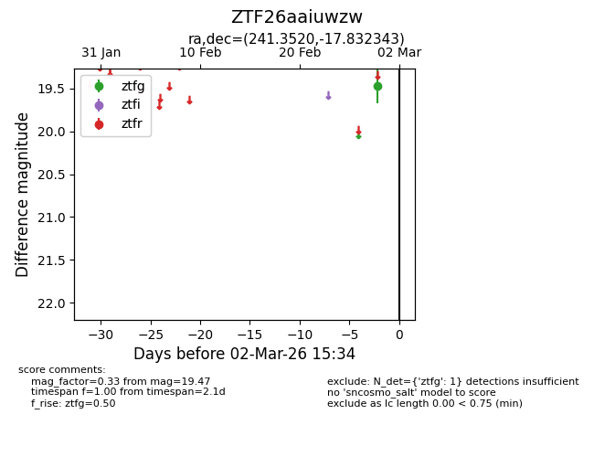
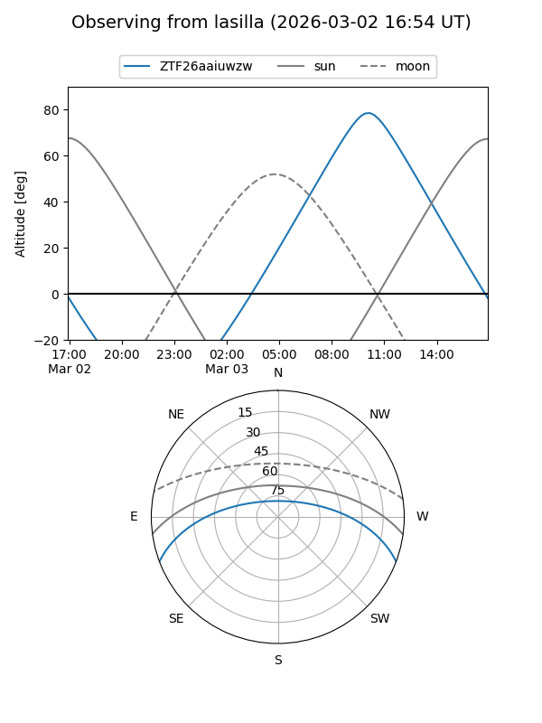
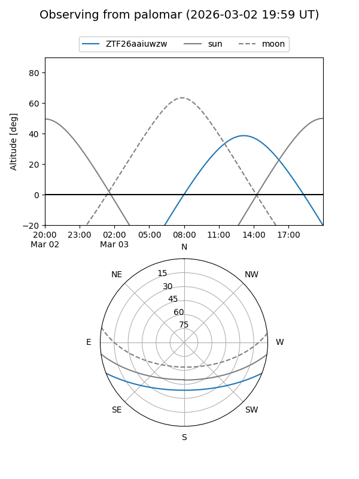

ZTF26aaiuwzw
Target ZTF26aaiuwzw at 2026-03-02 15:39
Aliases and brokers:
FINK: link
Lasair: link
ALeRCE: link
alt names
ZTF26aaiuwzw (ztf,fink_ztf)
Coordinates:
equatorial (ra, dec) = 241.3520,-17.83234
equatorial (HMS+DMS) = 16:05:24.49,-17:49:56.44
galactic (l, b) = (354.7705,+24.95061)
Flags:
Photometry:
last ztfg=19.47
1 ztfg detections
Lightcurve

Visibility


Additional plots